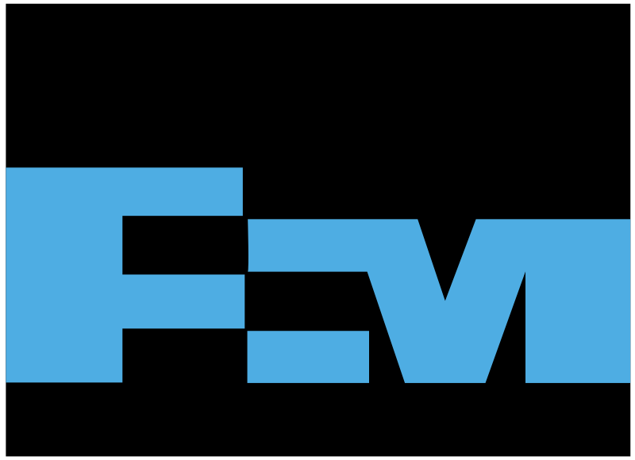
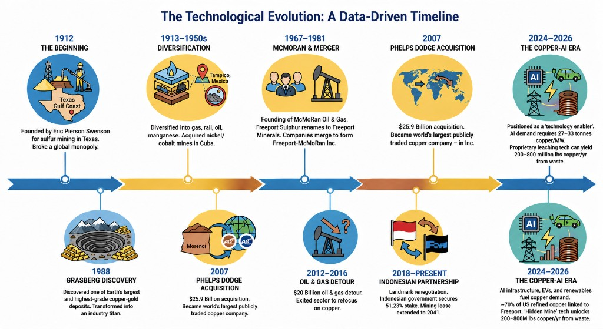
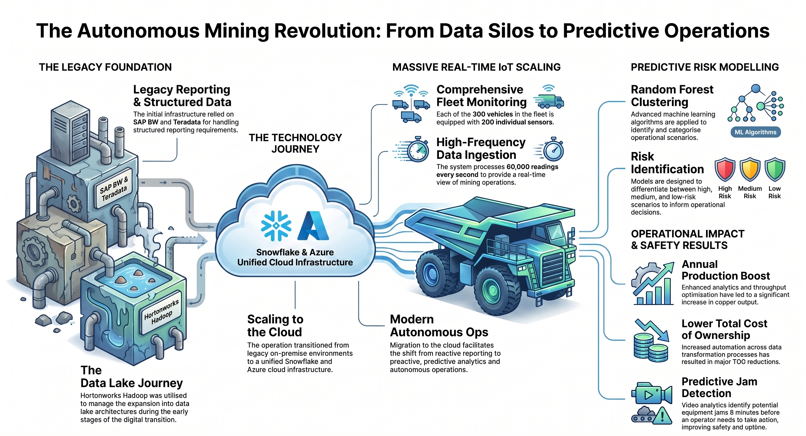
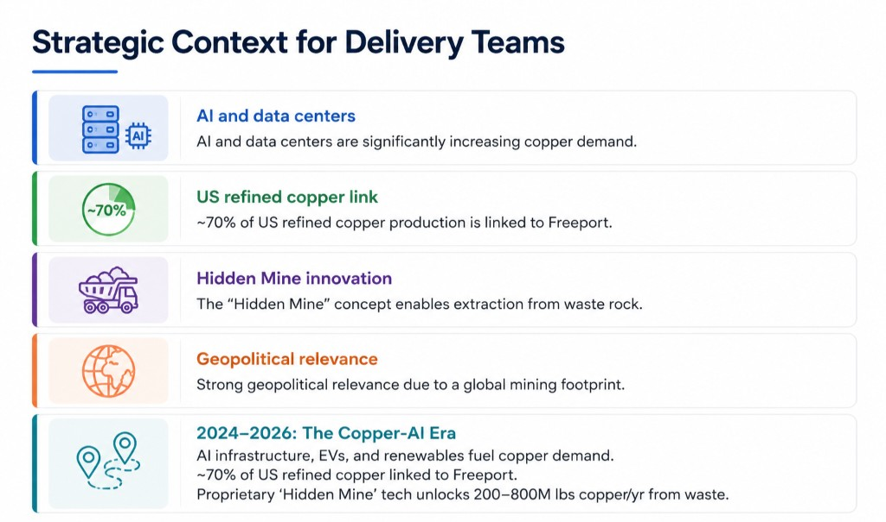

1912–1960s
Sulfur roots and gradual diversification into related industries.

Partnership Story
Copper leadership, an eighteen-year digital partnership, and the technology path delivery teams inherit today.
01 · Freeport Story
Freeport-McMoRan is one of the world’s largest copper producers. This century-long arc runs from sulfur origins through Grasberg, the Phelps Dodge acquisition, and today’s copper demand from electrification and AI.
Sulfur roots and gradual diversification into related industries.
Grasberg establishes Freeport as a major copper–gold producer.
Phelps Dodge acquisition expands Freeport’s copper footprint worldwide.
Indonesian partnership and a sharper focus on copper as a strategic metal.
Copper–AI era — data centers, EVs, and renewables raise copper intensity.

02 · Partnership
Twenty years of digital evolution: reporting and data-lake foundations, cloud migration to Azure and Snowflake, real-time operations, event-driven analytics, and SAP S/4HANA enterprise modernization.
Foundation and cloud migration — BI and data lakes on SAP BW, Teradata, and Hadoop; Azure reporting; then primary Snowflake migration.
Advanced intelligence — IoT leach analytics, fleet and autonomous haul metrics in Snowflake, event-driven workflows, and SAP S/4HANA enterprise modernization.

03 · Technology
Legacy reporting and Hadoop lakes gave way to Snowflake on Azure, high-volume fleet telemetry, and predictive models that affect throughput, cost, and safety.
SAP BW and Teradata for structured reporting; Hortonworks Hadoop for the data lake.
Snowflake and Azure as the core platform for analytics and integration.
Hundreds of vehicles, dense sensor coverage, and continuous readings into operations systems.
Risk models and early jam detection support production, lower TCO, and safer operations.

04 · Delivery Context
Copper demand is rising with AI and the energy transition. Freeport’s share of U.S. refined copper is material, and innovations such as Hidden Mine change how residual copper can be recovered.
New compute infrastructure increases copper intensity per megawatt of capacity.
Roughly 70% of U.S. refined copper production is linked to Freeport.
Proprietary leaching concepts aim to unlock copper from waste rock at meaningful volumes.
A worldwide operating base keeps Freeport relevant in supply, policy, and customer talks.
